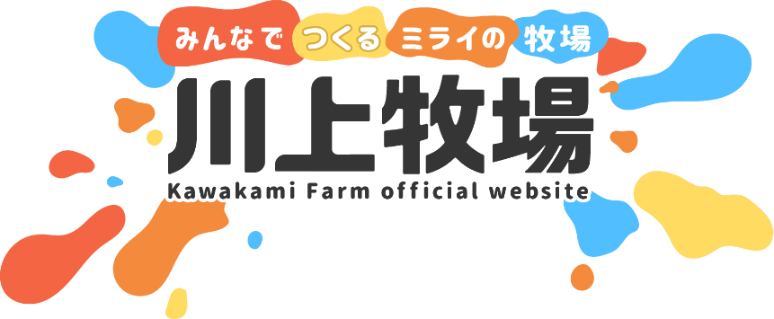
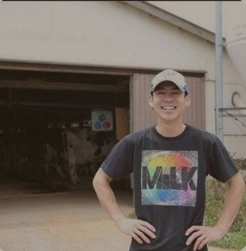

<!doctype html><html lang="ja"><head><meta charset="utf-8">
<link href="https://fonts.googleapis.com/css2?family=Noto+Sans+JP:wght@500;700;900&display=swap" rel="stylesheet">
<style>
/* Instagram 縦長 1080×1350（4:5）。2026-10-11 作り直し:
   - 1枚目は牧場の写真＋太いゴシックの質問（フィードで止まってもらう面。文字だけの面は告知に見えて流される）
   - プロフィールの一覧は中央 3:4（左右が約34pxずつ欠ける）ので、文字は左右 72px 以上内側に置く
   - 1枚に言うことは1つ。2枚目は答えの要点、3枚目は「保存・続き・質問」の3つの次の一歩
   - 色はサイトと同じ（深緑・生成り・干し草の黄）。英語・絵文字は入れない */
:root{--moss:#172a19;--moss2:#2f5232;--cream:#fdfbf6;--cream2:#f4ecdb;--hay:#f2cf7a;--ink:#172a19;--ink2:#3c4435;--line:#06c755}
html,body{margin:0;width:1080px;height:1350px;overflow:hidden;font-family:"Noto Sans JP",sans-serif;background:var(--cream)}
.card{position:relative;width:1080px;height:1350px;box-sizing:border-box;overflow:hidden}
.pill{display:inline-flex;align-items:center;font-weight:900;font-size:34px;letter-spacing:.04em;padding:14px 30px;border-radius:999px}
.foot{position:absolute;left:84px;right:84px;bottom:56px;display:flex;align-items:center;gap:20px;font-size:28px;font-weight:700}
.foot img{height:72px;border-radius:12px;background:#fff;padding:4px 8px;box-sizing:border-box}
.foot .n{margin-left:auto;opacity:.6}

/* 1枚目 */
.s1 .photo{position:absolute;inset:0 0 auto 0;height:620px;background-size:cover;background-position:center}
.s1 .photo::after{content:"";position:absolute;inset:0;background:linear-gradient(to bottom,rgba(23,42,25,.15),rgba(23,42,25,0) 40%)}
.s1 .tag{position:absolute;left:84px;top:72px;background:var(--hay);color:var(--moss)}
.s1 .panel{position:absolute;left:0;right:0;top:560px;bottom:0;background:var(--cream);border-radius:56px 56px 0 0;padding:56px 84px 0;display:flex;flex-direction:column;align-items:flex-start}
.s1 .qmark{display:inline-flex;align-items:center;justify-content:center;width:84px;height:84px;border-radius:50%;background:var(--moss);color:var(--hay);font-weight:900;font-size:46px}
.s1 .q{margin-top:18px;font-weight:900;color:var(--ink);line-height:1.38;letter-spacing:.01em;word-break:auto-phrase}
.s1 .next{margin-top:36px;align-self:flex-end;background:var(--moss);color:var(--cream);font-size:32px}
.s1 .foot{color:var(--moss2)}

/* 2枚目 */
.s2{background:var(--cream);padding:96px 84px 0}
.s2 .head{display:flex;align-items:center;gap:24px}
.s2 .amark{width:104px;height:104px;border-radius:50%;background:var(--moss);color:var(--hay);font-weight:900;font-size:54px;display:flex;align-items:center;justify-content:center}
.s2 .who{font-size:38px;font-weight:900;color:var(--moss)}
.s2 .who small{display:block;font-size:26px;font-weight:700;color:var(--ink2);margin-top:4px}
.s2 .qline{margin-top:44px;font-size:32px;font-weight:700;color:var(--ink2);line-height:1.5;border-left:8px solid var(--hay);padding-left:22px;word-break:auto-phrase}
.s2 ul{list-style:none;margin:40px 0 0;padding:0;display:flex;flex-direction:column;gap:26px}
.s2 li{background:#fff;border-radius:28px;padding:30px 34px;font-size:40px;line-height:1.62;font-weight:500;color:var(--ink);box-shadow:0 2px 0 var(--cream2);word-break:auto-phrase}
.s2 .src{position:absolute;left:84px;right:84px;bottom:150px;font-size:26px;line-height:1.5;color:#5f665a;word-break:auto-phrase}
.s2 .foot{color:var(--moss2)}

/* 3枚目 */
.s3{background:var(--moss);color:var(--cream);padding:96px 84px 0}
.s3 .me{display:flex;align-items:center;gap:28px}
.s3 .me img{width:150px;height:150px;border-radius:50%;object-fit:cover;border:6px solid var(--hay)}
.s3 .me b{font-size:40px;font-weight:900;display:block}
.s3 .me span{font-size:28px;font-weight:700;color:var(--hay)}
.s3 .big{margin-top:60px;font-weight:900;font-size:68px;line-height:1.34;word-break:auto-phrase}
.s3 .steps{margin-top:56px;display:flex;flex-direction:column;gap:22px}
.s3 .step{display:flex;align-items:center;gap:26px;background:rgba(253,251,246,.08);border-radius:26px;padding:26px 30px}
.s3 .step b{flex:none;width:170px;text-align:center;font-size:34px;font-weight:900;padding:12px 0;border-radius:16px;background:var(--hay);color:var(--moss)}
.s3 .step b.line{background:var(--line);color:#fff}
.s3 .step span{font-size:34px;font-weight:700;line-height:1.45}
.s3 .foot{color:var(--hay)}
</style></head><body>
<div id="root"></div>
<script>
const d = JSON.parse(decodeURIComponent(location.hash.slice(1)));
const esc = (t) => String(t).replace(/[&<>"]/g, (c) => ({ '&': '&amp;', '<': '&lt;', '>': '&gt;', '"': '&quot;' }[c]));
const foot = (n) => `<div class="foot"><span>川上牧場 酪農データバンク</span><span class="n">${n}/3</span></div>`;
let html = '';
if (d.slide === 1) {
  const len = d.q.length;
  const size = len <= 16 ? 94 : len <= 24 ? 84 : len <= 34 ? 74 : len <= 46 ? 64 : 56;
  html = `<div class="card s1">
    <div class="photo" style="background-image:url('photos/${esc(d.photo)}.jpg');background-position:${{ calf: 'center 6%', jersey: 'center 40%' }[d.photo] ?? 'center'}"></div>
    <div class="pill tag">牧場に届いた質問</div>
    <div class="panel"><div class="qmark">問</div><div class="q" style="font-size:${size}px">${esc(d.q)}</div><div class="pill next">酪農家の答えは次へ</div></div>
    ${foot(1)}</div>`;
} else if (d.slide === 2) {
  html = `<div class="card s2">
    <div class="head"><div class="amark">答</div><div class="who">出雲の酪農家の答え<small>毎朝の配信で答えたことの要約</small></div></div>
    <div class="qline">${esc(d.q)}</div>
    <ul>${d.a.map((p) => `<li>${esc(p)}</li>`).join('')}</ul>
    <div class="src">${esc(d.date)}の配信「${esc(d.title)}」より</div>${foot(2)}</div>`;
} else {
  html = `<div class="card s3">
    <div class="me"><div><b>川上牧場</b><span>島根県出雲市の酪農家</span></div></div>
    <div class="big">あなたの質問が、<br>誰かの牛乳を<br>もっとおいしくする。</div>
    <div class="steps">
      <div class="step"><b>保存</b><span>あとで見返せるように</span></div>
      <div class="step"><b>続き</b><span>答えの全文はプロフィールのリンクから</span></div>
      <div class="step"><b class="line">LINE</b><span>あなたの「なぜ？」を送ってください</span></div>
    </div>${foot(3)}</div>`;
}
document.getElementById('root').innerHTML = html;
</script>
</body></html>
